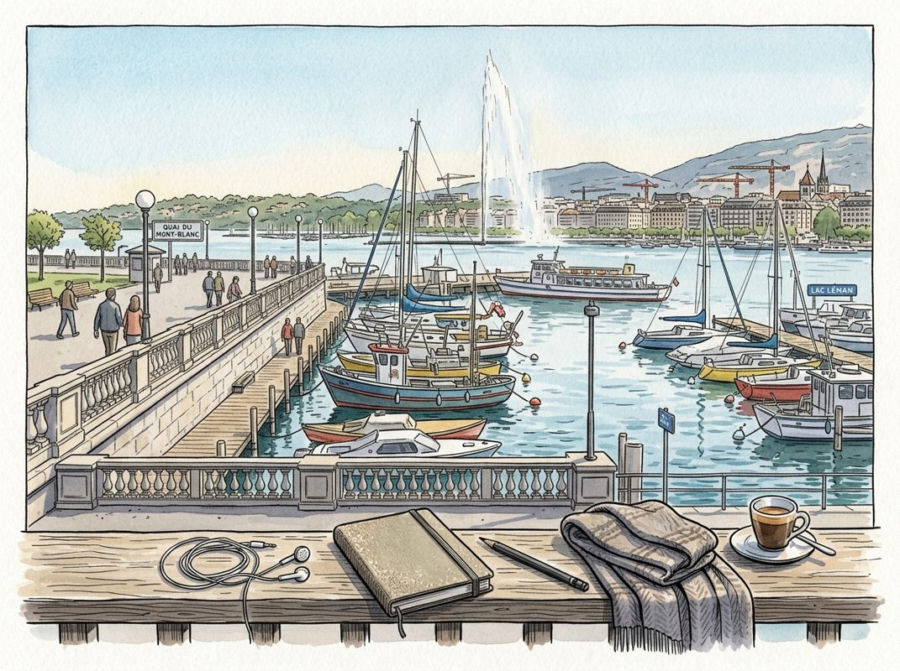

9/20

今日更新
Building One of the Fastest Growing CPG Company in History | Peter Rahal of David Protein, Medici Brands & RXBAR
来源：David-Senra
原链接：https://www.davidsenra.com/episode/peter-rahal
状态：已读网页 transcript
这期播客深入探讨了连续创业者Peter Rahal从成功出售RXBAR后的迷茫、对投资的幻灭，到重新发现创业激情并以极致的“全情投入”和独特理念打造下一家食品巨头的历程。它适合所有对创业、品牌建设、团队管理以及如何将个人经历转化为强大驱动力感兴趣的读者。
- 亿万富翁的“中年危机”：从投资的幻灭到重回战场：Peter Rahal在24岁时与人共同创立了蛋白棒品牌RXBAR，并在几年后以6亿美元的价格出售，他和联合创始人持有90%的股份，使他年纪轻轻就拥有了约2.5亿美元的现金。出售公司后，他尝试进入投资领域，设立家族办公室，并搬到迈阿密。然而，他很快发现自己对此感到极度痛苦和不适应。他认为投资过于被动，缺乏运营的“刀光剑影”，反馈周期漫长（五年才能验证一个投资决策），与他习惯的即时反馈截然不同。更重要的是，他发现许多创业者缺乏他所认为的“不成功便成仁”的韧性，这让他感到自己像一个被束缚在副驾驶座上、看着别人盲目驾驶的乘客。这种深刻的挫败感促使他意识到，自己天生就是一个运营者，必须回到创业一线。
- 重新定义“蛋白棒小哥”：构建21世纪最重要的食品公司：在经历了一年的投资迷茫期和几次创业的“假启动”后，Peter Rahal开始反思自己的道路。他坦承，最初曾受埃隆·马斯克等人的影响，认为自己需要做一些“更有影响力”的事情，而不是再次涉足食品行业，甚至对“蛋白棒小哥”的标签感到抗拒。然而，他最终认识到，自己从12岁起就与食品行业结缘，拥有深厚的内在知识和直觉。他意识到，一个公司的领导者必须能够深刻理解并解决产品问题，而这正是他在食品领域所擅长的。在解决了个人生活（找到妻子并组建家庭，以避免因“全情投入”而再次牺牲个人幸福）后，他决定回归自己最熟悉的领域，创立了David品牌，并立志将其打造成21世纪最重要的食品公司，与雀巢等巨头竞争，目标是让“你最喜欢的食物变得更智能、更有效、客观上更好”。
- 品牌即生命：智能、美学与纪律的长期主义：Peter Rahal将品牌比作一个有生命的人，拥有姓名、父母（创始人）、DNA、价值观、愿景、语调和社交圈（合作伙伴）。David品牌的价值观围绕着“智能、美学和纪律”展开，灵感来源于米开朗基罗的大卫雕塑及其所象征的意义，以及雕刻工具“凿子”所代表的智慧和自律。他强调，一旦品牌身份被清晰定义，营销就会变得异常简单，只需“持续不断地重复这些核心点”。他通过研究发现，最优秀的品牌往往是历史悠久的品牌，这凸显了时间因素和品牌一致性的重要性。同时，品牌也是极其脆弱的，一旦在质量或其他方面出现问题，便可能迅速瓦解。他选择这些价值观，不仅因为它们与他个人紧密相连，也因为它们与蛋白棒的核心功能——身体塑形和健康管理——高度契合，以一种更精致、更欧洲化的方式解决人们普遍存在的体重和肌肉问题。
- 痛苦与愤怒的引擎：一位创业者的极致驱动力：Peter Rahal坦言，他有一种近乎病态的对“痛苦”的吸引力，总是选择最艰难的道路，并从中获得精神上的满足和成长。他将这种极致的驱动力归因于童年经历：由于阅读障碍（dyslexia），他曾被老师贴上“残疾”甚至“愚蠢”的标签。这种经历在他内心深处埋下了巨大的“怨恨和愤怒”，成为他证明自己、反抗权威的内在动力。他认为，如果不能将这种能量以建设性的方式引导，它就会变得具有破坏性。而创业，尤其是公司建设的过程，正是他将这些负面情绪转化为生产力的最佳途径。这种“肩上有筹码，口袋里才有筹码”的理念，与Uber创始人Travis Kalanick的“我能承受比你更多的痛苦”以及四季酒店创始人V.Z. Sharp的“卓越是承受痛苦的能力”不谋而合，成为他不断超越自我的强大引擎。
- 闪电般的速度与“产品即营销”的创新实践：David公司在短短两年内取得了惊人的增长，年营收运行率超过4亿美元，实际营收将达到3亿美元，被Peter Rahal称为“历史上增长最快的食品公司”。这种速度体现在其快速扩张的产品线，包括冷冻食品、蛋白棒、即饮饮料和糖果等多个品类。然而，这种原子层面的实体业务增长也带来了巨大的供应链挑战，尤其是在原材料采购和库存管理方面，导致公司经常面临供应短缺。为了在竞争激烈的食品市场中脱颖而出，Peter Rahal还实践了“产品即营销”的策略。例如，他们在网站上将水煮鳕鱼列为蛋白质/卡路里比最高的食物，高于自家蛋白棒，并真的以55美元的价格出售冷冻鳕鱼。这并非为了盈利，而是作为一种巧妙的沟通工具，将讨论的焦点引向蛋白质效率，打破了传统食品营销的沉闷，展现了品牌的智能与幽默。
A Goldman M&A Banker Helped Bring the Olympics to Los Angeles
来源：Odd Lots
原链接：https://omny.fm/shows/odd-lots/a-goldman-m-a-banker-helped-bring-the-olympics-to-los-angeles
状态：已读网页 transcript
这期播客深入探讨了高盛资深并购银行家吉恩·赛克斯如何将华尔街的交易智慧应用于洛杉矶奥运会的申办，并剖析了当前由AI驱动的并购热潮与21世纪初TMT泡沫的异同，为理解大型项目融资和企业战略转型提供了独特视角。它适合对金融并购、大型活动管理以及科技发展趋势感兴趣的中文读者。
- 华尔街的“隐形巨头”：高盛并购银行家吉恩·赛克斯：播客介绍了高盛并购联席主管吉恩·赛克斯的非凡职业生涯。他被《纽约杂志》誉为“你从未听说过的最具影响力的并购银行家”，在华尔街拥有数十年的丰富经验。赛克斯曾主导多项标志性交易，包括康卡斯特（Comcast）收购环球影业（Universal）以及迪士尼（Disney）收购皮克斯（Pixar）等。他的职业轨迹不仅展现了其在复杂交易中的卓越能力，也为理解大型企业并购的幕后运作提供了窗口，揭示了顶尖金融家在资本市场中的深远影响力。
- 从并购谈判桌到奥运申办舞台：洛杉矶2028的幕后推手：令人惊讶的是，这位华尔街的并购巨头还成功地将他的交易智慧应用于公共服务领域。吉恩·赛克斯主导了洛杉矶申办2028年夏季奥运会的整个过程，并最终成功。这不仅仅是一项体育赛事，更是一项涉及多方利益、巨额资金和复杂谈判的“超级项目”。赛克斯将他在企业并购中积累的谈判技巧、风险评估和战略规划能力，巧妙地运用到城市申办奥运会的过程中，帮助洛杉矶构建了一个既具吸引力又财务可行的方案，最终赢得了国际奥委会的青睐。
- 奥运会巨额开销之谜：城市如何平衡收支？：播客深入探讨了主办奥运会所面临的巨大财务挑战。大型体育赛事往往伴随着天文数字般的开销，包括新建或升级基础设施、庞大的安保费用、赛事运营和全球营销等。城市如何为这些巨额支出筹集资金，并确保项目不会成为财政负担，是核心议题。讨论可能涵盖了政府拨款、私人赞助、门票销售、电视转播权以及特许经营权等多元化收入来源。赛克斯的金融背景在此过程中至关重要，他能够运用专业的财务模型和风险管理策略，帮助洛杉矶制定一个可持续的财政计划，避免重蹈一些城市因奥运会而陷入财政困境的覆辙。
- 2000年代TMT泡沫与当前AI并购热潮的惊人相似：播客将当前的并购环境与21世纪初的TMT（科技、媒体、电信）泡沫时期进行了对比。两个时代都见证了颠覆性技术的崛起，引发了企业间的激烈竞争和大规模并购浪潮。在TMT泡沫时期，公司争相通过并购来获取技术、市场份额和人才。如今，由人工智能（AI）驱动的变革正引发类似的狂热，企业为了在AI竞赛中保持领先，不惜重金进行“大宗交易”。高盛报告的创纪录交易量，正是这种市场情绪和战略需求的直接体现，预示着一个充满机遇与风险并存的时代。
- AI时代下的并购逻辑：巨头们的战略布局：当前由AI驱动的并购浪潮，其背后逻辑与以往有所不同。企业不再仅仅是为了扩大规模或整合市场，更重要的是为了获取核心的AI技术、顶尖人才、宝贵数据和知识产权。在AI技术飞速发展的背景下，通过并购是企业快速构建自身AI能力、应对市场竞争压力的有效途径。无论是科技巨头还是传统行业参与者，都在积极寻求通过战略性收购来加速转型，确保在未来AI主导的商业格局中占据有利位置。赛克斯作为并购专家，对这种由技术变革驱动的交易模式有着深刻的洞察。
历史精选
10 Years of Acquired (with Michael Lewis)
来源：Acquired
原链接：https://www.acquired.fm/episodes/10-years-of-acquired-with-michael-lewis
状态：已读网页 transcript
这期播客深入剖析了《Acquired》如何从一个业余爱好成长为成功的媒体业务，通过两位主持人Ben和David的个人化学反应、对商业策略的深刻理解以及对内容质量的极致追求，为任何希望打造持久品牌或理解商业成功本质的听众提供了宝贵的经验。
- 十年回顾：从车库到谷歌车库的里程碑：在谷歌最初的车库里，Ben Gilbert和David Rosenthal庆祝了《Acquired》播客成立十周年。他们邀请了著名作家Michael Lewis作为特邀嘉宾，共同探讨《Acquired》为何能在99%的播客失败的情况下取得成功。Lewis指出，播客的早期版本与现在截然不同，从最初的短小、不自信，发展到如今的深度、情感丰富。这次回顾不仅是对自身旅程的总结，也试图从他们所研究的伟大公司中汲取经验，反思《Acquired》自身的成长路径和成功秘诀。
- Ben与David的独特化学反应与合作模式：Ben和David的合作始于一次逾越节家宴，并在风险投资公司成为同事。Lewis观察到他们之间存在一种独特的化学反应，两人相互仰慕，Ben欣赏David的商业洞察力，而David则敬佩Ben的工程背景和产品构建能力。这种互补性让他们能够激发彼此的潜能，创造出更好的内容。尽管David曾全职投入播客，Ben兼职，但他们始终保持平等伙伴关系，从未因贡献差异而计较，这在Lewis看来是真正协作的标志，也是《Acquired》成功的基石。
- 内容策略的演变：从数量到稀缺与深度：《Acquired》的早期节目时长较短，每年发布多达26集。然而，随着时间的推移，他们逐渐意识到“稀缺性”和“深度”的重要性。受NFL（稀缺的赛事）和爱马仕（手工制作的奢侈品）的启发，他们将节目数量大幅削减至每年8-12集，并将每集时长延长至数小时。这种转变让每期节目都成为精心打磨的“手工制品”，专注于提供极致的质量和深度，而非追求更新频率。这种反直觉的策略，反而吸引了更忠实的听众和高端的商业赞助商，如摩根大通。
- “太难了”：巴菲特与芒格的智慧：从伯克希尔·哈撒韦的案例中，Ben和David学到了沃伦·巴菲特和查理·芒格的“太难了”（too hard pile）原则。这意味着他们学会了对不擅长或投入产出比不高的项目说“不”，即使这些项目看似诱人（例如好莱坞的合作机会）。他们意识到，制作一期高质量的《Acquired》节目所带来的长期价值和复利效应，远高于分散精力去追求其他短期或不确定的机会。这种聚焦核心竞争力的策略，让他们能够将有限的资源投入到最能产生价值的地方。
- 播客的复利效应与“恐惧”驱动：与Michael Lewis的图书出版模式不同，《Acquired》的播客拥有独特的复利效应：每发布一集新节目，都会吸引新的订阅者，并带动旧节目的收听量。这种订阅模式确保了听众的持续增长和内容的持久价值。然而，这种成功也伴随着“恐惧”——Ben和David坦言，他们每次制作节目都感到巨大的压力，害怕辜负听众的期望，将每一次发布都视为一次“流失机会”。这种对质量的极致追求和对听众信任的珍视，成为他们不断提升内容水准的强大动力。
Cognex: Vision Quest - [Business Breakdowns, REPLAY]
来源：Business Breakdowns
原链接：https://colossus.com/episode/cognex-vision-quest/
状态：已读网页 transcript
这期播客深入剖析了机器视觉领导者康耐视（Cognex）的业务模式、技术演进和市场策略，对于关注工业自动化、物理AI发展以及周期性工业企业投资价值的听众极具参考价值。
- 康耐视：工业自动化的“眼睛”：康耐视（Cognex）是机器视觉领域的全球领导者，其核心业务是为工厂和物流系统提供“视觉”能力。公司开发和销售的摄像头、传感器及配套软件，能够执行产品检测、缺陷识别、条形码读取以及机器人引导等关键任务，广泛应用于全球的制造产线和仓储设施。与典型的订阅式软件公司不同，康耐视是一家周期性的工业企业，其增长并非来自经常性收入，而是通过不断识别和抓住自动化领域的新“S曲线”机遇。从早期的半导体检测到现代物流系统，再到当前由AI驱动的视觉应用，康耐视在过去几十年中持续拓展机器视觉技术的应用边界，成为物理AI和工业自动化不可或缺的一部分。
- 机器视觉市场格局与康耐视的竞争优势：机器视觉市场是一个规模庞大且不断增长的领域，康耐视在其中占据领先地位。播客指出，康耐视的市场份额约为20-25%，在高端和复杂应用领域拥有显著优势。其主要竞争对手包括日本的基恩士（Keyence），后者以标准化、易于集成的产品和强大的直销模式著称。康耐视的差异化在于其解决复杂、定制化视觉挑战的能力。当客户面临独特或高难度的检测需求时，康耐视凭借其深厚的技术积累和专业的应用工程师团队，能够提供更具创新性和可靠性的解决方案。这种解决“硬骨头”问题的能力，使得康耐视在特定细分市场建立了强大的护城河和客户粘性。
- S曲线增长策略与资本支出周期：康耐视的成长历程可以被理解为一系列“S曲线”的叠加。公司通过不断识别新的自动化应用领域，投入研发并拓展市场，从而实现阶段性高速增长。例如，早期在半导体行业的检测应用，随后扩展到汽车制造、消费电子，再到近年来的物流和电商仓储自动化。这些增长往往与客户的资本支出周期紧密相关，使得康耐视的业务表现出明显的周期性。当全球经济景气、企业加大自动化投资时，康耐视的订单和收入会随之增长；反之，在经济下行或资本支出放缓时，其业绩也会受到影响。理解这种周期性对于评估康耐视的投资价值至关重要。
- 技术演进：从规则编程到深度学习：机器视觉技术正在经历一场深刻的变革，从传统的“规则编程”向“深度学习”迈进。过去，机器视觉系统需要工程师编写详细的规则来识别缺陷或特征，这在面对复杂、多变或非结构化场景时效率低下且难以扩展。例如，识别一个有划痕的苹果可能需要定义划痕的颜色、形状、大小等一系列参数。而深度学习技术，通过训练大量数据，能够让机器自主学习并识别复杂的模式，极大地提升了机器视觉的适应性和鲁棒性。康耐视积极拥抱深度学习，将其融入产品线，这不仅提升了现有解决方案的性能，更解锁了传统技术无法企及的全新应用场景，被视为公司未来增长的下一个重要驱动力。
- 独特的企业文化与客户粘性：康耐视的成功也离不开其独特的企业文化和创始人故事。公司由罗伯特·希尔曼（Robert Shillman）博士创立，他将幽默感和对技术的热情融入公司DNA。这种文化吸引并留住了顶尖的工程师，鼓励他们挑战极限，解决最复杂的视觉问题。在销售方面，康耐视通常通过直销团队和系统集成商（SI）将产品销售给终端客户。由于机器视觉系统通常是生产线或物流系统中的关键组成部分，一旦部署，客户更换供应商的成本和风险很高，因此康耐视的解决方案具有很强的客户粘性。这种粘性加上其解决复杂问题的能力，构成了公司持续竞争力的重要基石。